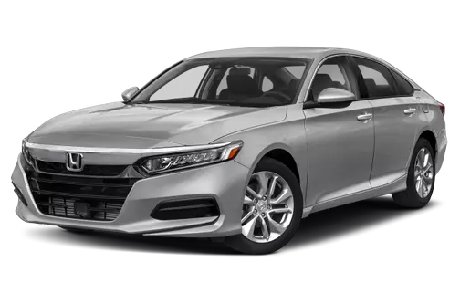
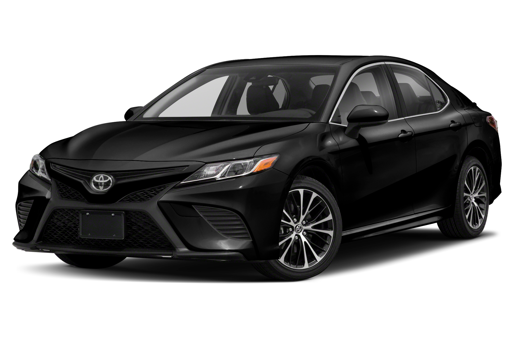
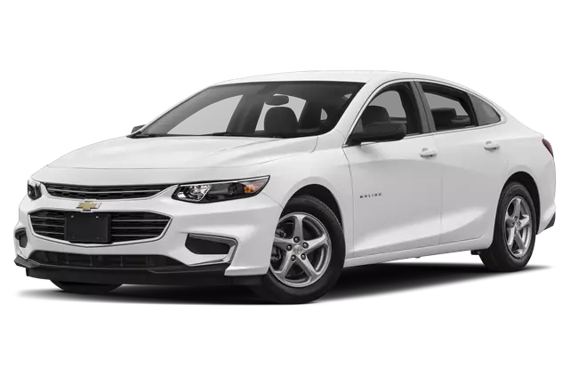
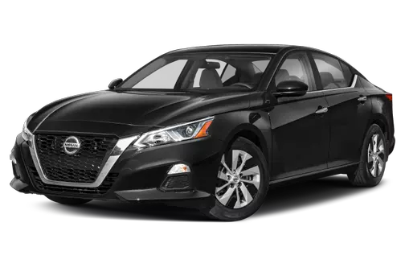

Filter Your Choice!

Honda Civic
Year: 2016
Mileage: 15,000 miles
Price: 20000
Good Quality Honda.

Toyota Camry
Year: 2018
Mileage: 10,000 miles
Price: 25000
Amazing details for a 2018 Tayota

Ford Fusion
Year: 2017
Mileage: 20,000 miles
Price: 10000
Fusion great cost for miles.

Chevrolet Malibu
Year: 2015
Mileage: 30,000 miles
Price: 15000
Very good a good quality car

Nissan Altima
Year: 2019
Mileage: 20,000 miles
Price: 30000
A good run for your money car.
Dodge Challenger
Year: 2015
Mileage: 20,000 miles
Price: 25000
Challenger for a low price and great mileage.